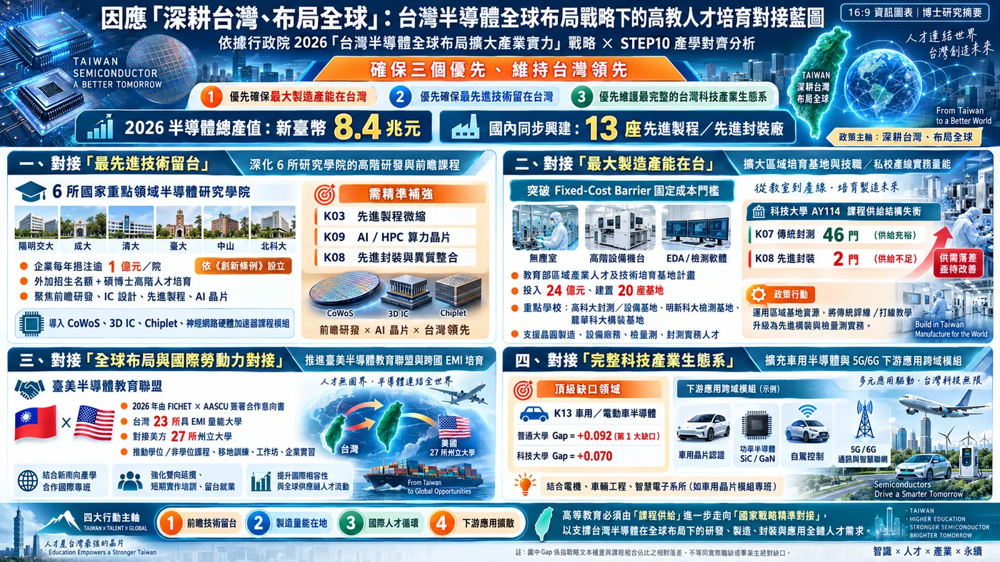
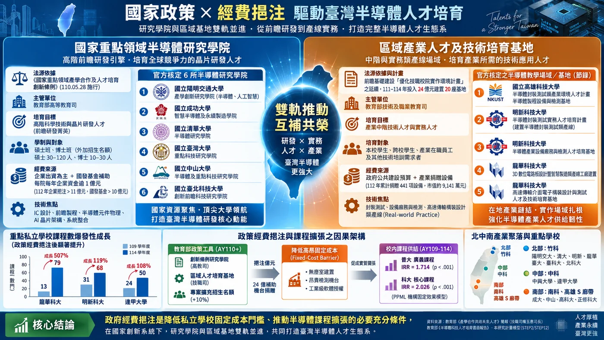
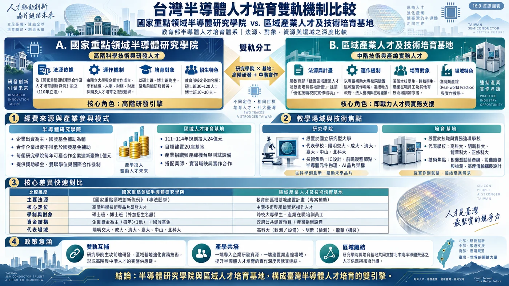
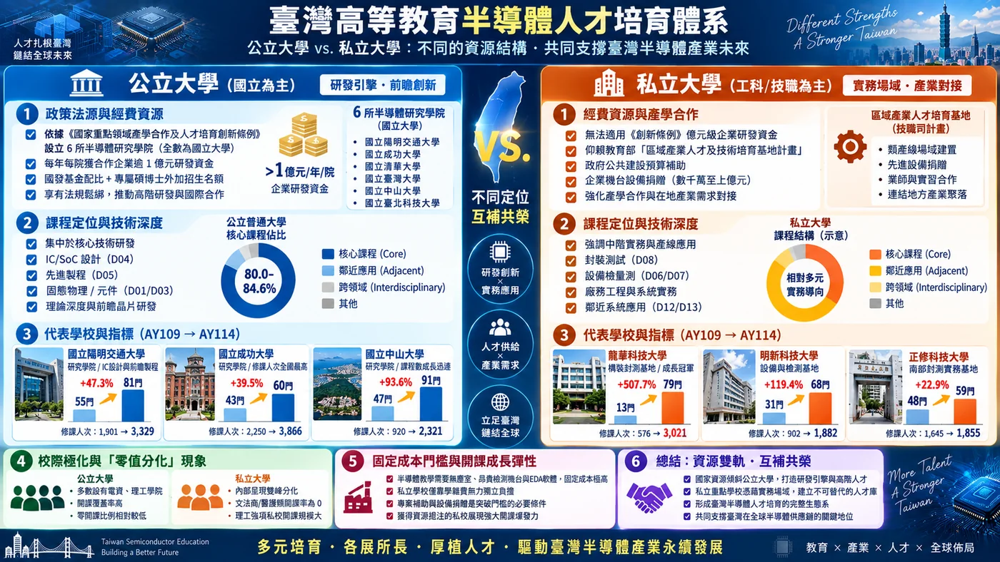
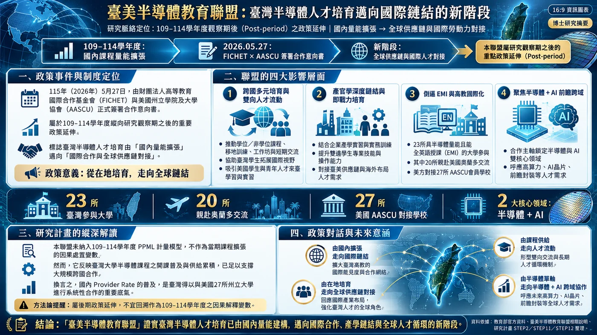
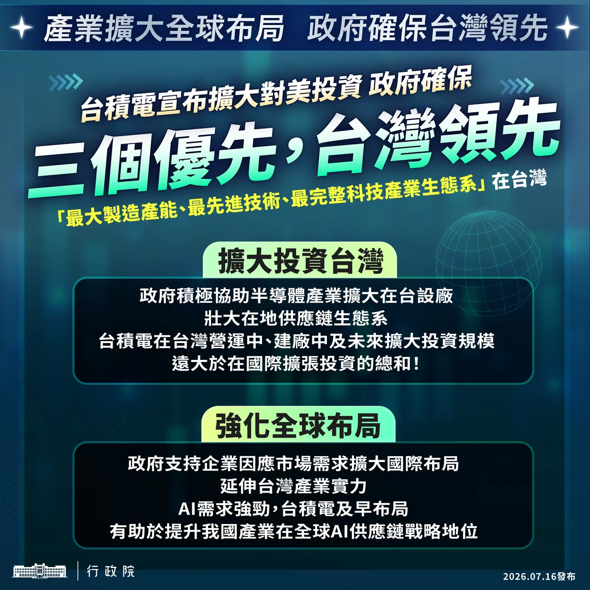
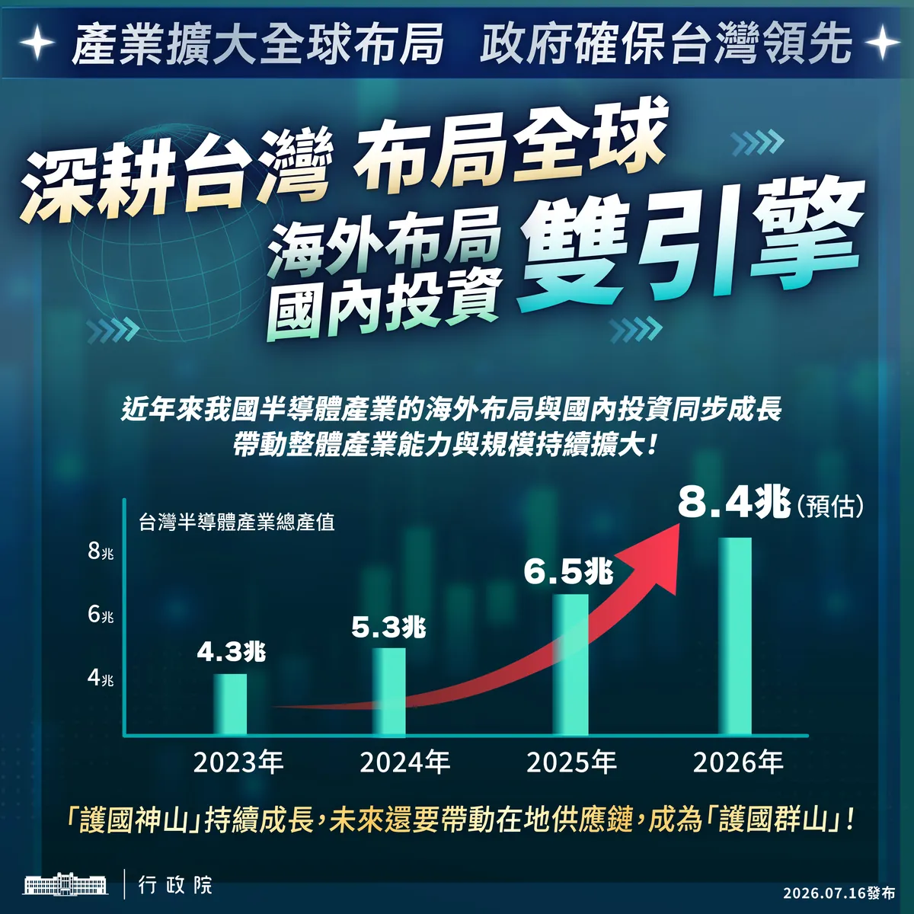
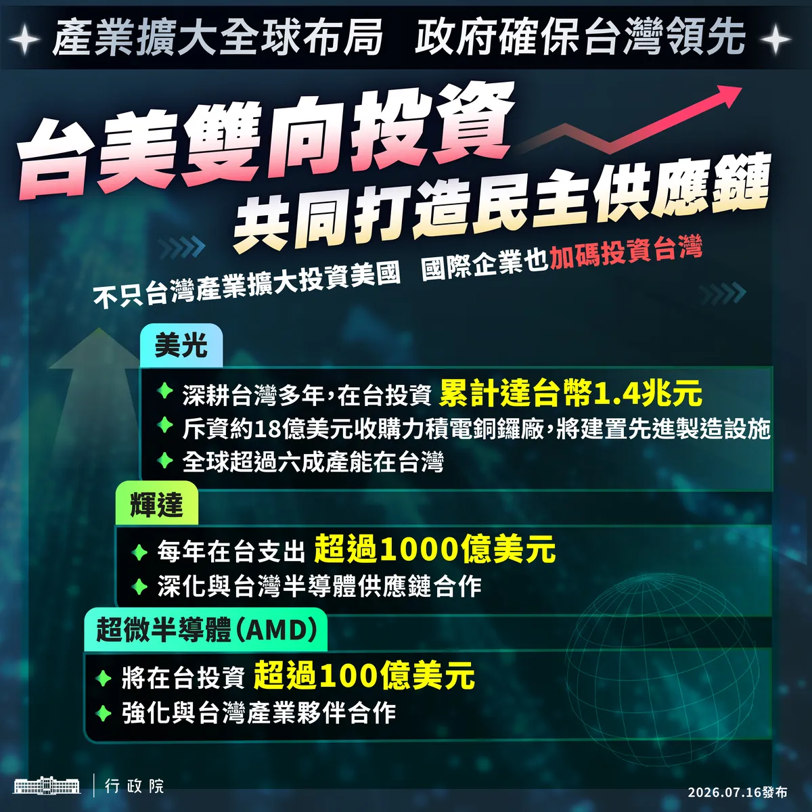
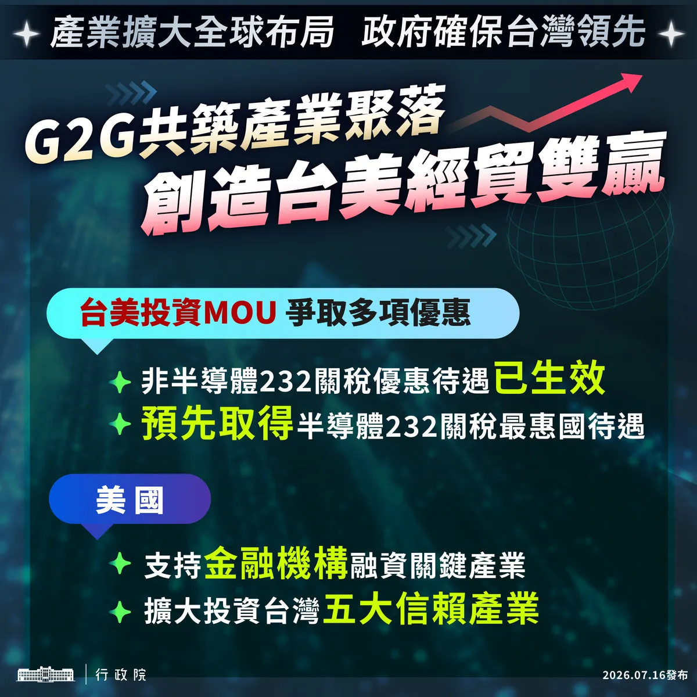

台灣具備 IC 設計、製造、封測與完整供應鏈優勢。當 AI/HPC、先進製程、先進封裝、5G/6G、車用與化合物半導體快速演進，大學課程是否跟得上，就成為可以被量化的研究問題。
國發會資料指出，2023 年台灣半導體產值約 4.3 兆元；晶圓代工全球占比 65%、IC 封測 53%，均居全球第一。
教育部從 AY110 起擴充半導體、AI、機械領域招生，並投入類產線、區域人才基地、跨域課程與國家重點領域研究學院。
行政院強調「深耕台灣、布局全球」與三個優先；教育部也啟動臺美半導體教育聯盟，擴大學位、短訓、交流與實習。





這四張官方圖卡可作為研究動機與「後續政策脈絡」，但不納入 AY109–AY114 的主要模型解釋。



